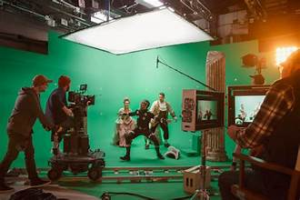
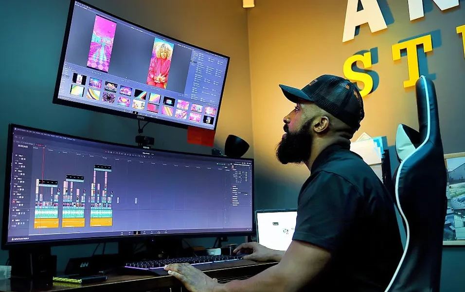
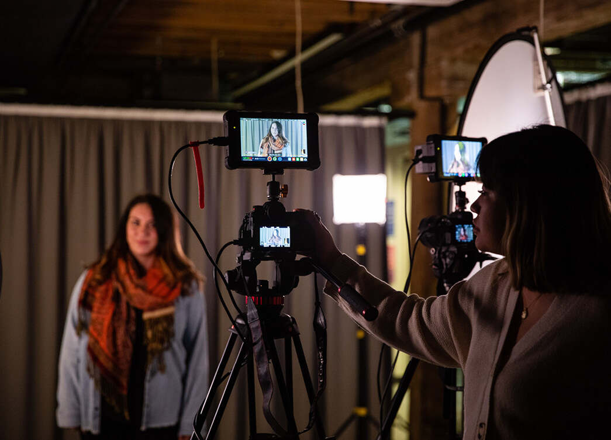

In Digital Production, my passion lies in the art of editing. Looking ahead, I am eager to apply my competitive nature and technical skills of digital media. I hope to eventually trasition into a role where I can mentor other aspiring creators, sharing the knowledge I've gained from my time at UCR and my years of self-taught experience. I have experience in editing softwares and I have had taught myself this skill since I was very young. I developed the understanding of how to piece together raw footage and have a narrative. Beyond the technical side, I am also intrested in cinematography the job of capturing moments through lens to create a visual story. I see design between a story and its audience, I emjoy the challenege of making information both beautiful and functional. I have a creative background as well as I was heavily part of music growing up. Having been in a marching band for my four years and involved with music my entire life since I was young. I developed communication and the value of teamwork when working with many individuals and having a strong voice. I am dedicated to be a team player and doing creative things drives me to feel very motivated to constantly improve each year. I am eager to explore how these different disciplines film, music and design can overlap to create a digital experience. thrive on the healthy competition found in creative workshops. Seeoing a peer execute a brilliant camera angle or a transitions doesn't just impress me but it motivates me to go back to my own project and find ways to improve even further. I believe that the 'look and feel' of a film's title sequence and the posters are vital in setting the audience expectations before the movie even plays. Looking toward the future, my goal is to lead the post-production process and continue to expand on my skills. I want to remain a lifelong learner who can adapt to any creative challenge that comes my way. I want to be the person in charge of editing movies that leave a impact on viewers, combining my skills with my artistic vision to help the team out. I am to create content that isn't just seen, but felt by the audience. Whether it's a short clip or a full-length feature, I want to approach every frame with the same level of dedication. I am committed to a successful career in the film industry where I can continue to inspire others and use my skills to bring out brand new ideas. Ultimately, I want to be a creator who can adapt to the fast-paced nature of the film industry. I am commited to a successful career where I can continue to inspire others with my work and use my evolving skills to bring brand new, innovative ideas to life in every project I touch. I am excited to continue my journey at UCR, pushing the boundaries of what is possible in digital storytelling. By staying curious and embracing every creative challenege, I am to leave a lasting mark on the industry and inspire the next generation of digital creators through my dedication.
• Collaborated with a large ensemble
• Developed strong discipline, time managment and communication skills
• Representing my school and my community by participating in public competitions
• Experience with standard software such as Adobe Premiere Pro
• Focused on pacing, sound design to create engaging visual stories
• Collaborated with a large group of people
• Participating in school events
• Learning how to be committed
• Evolving my music skills for my educational purposes


